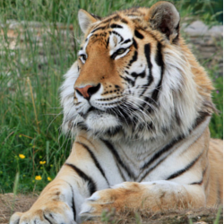

Tiger
Tigers have muscular bodies with powerful forelimbs, large heads and long tails
- Scientific Name: Panthera tigris
- Average Length: 98 to 154 in
- Average Lifespan: 20 - 26 years
- Habitat: Tigers can occupy a wide range of habitat types, but will usually require sufficient cover, proximity to water, and an abundance of prey
The pelage is dense and heavy; colouration varies between shades of orange and brown with white ventral areas and distinctive vertical black stripes, whose patterns are unique to each individual. Their function is likely for camouflage in vegetation such as long grass with strong vertical patterns of light and shade. The tiger is one of only a few striped cat species; it is not known why spotted patterns and rosettes are the more common camouflage pattern among felids. The tiger's stripes are also found on the skin, so that if it were to be shaved, its distinctive coat pattern would still be visible. They have a mane-like heavy growth of fur around the neck and jaws and long whiskers, especially in males. The pupils are circular with yellow irises. The small, rounded ears have a prominent white spot on the back, surrounded by black. These false "eyespots", called ocelli, apparently play an important role in intraspecies communication.